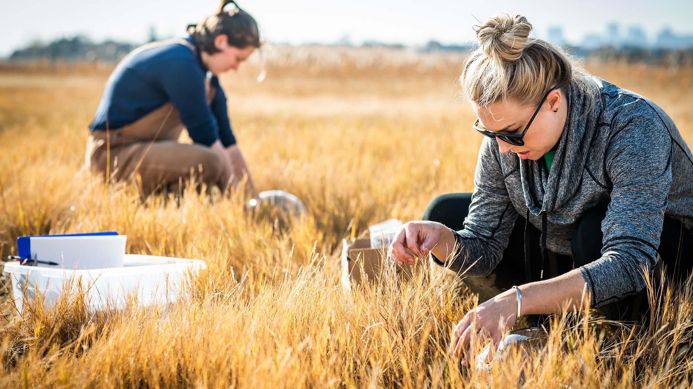

Launch Your Future as a Climate Scientist
Use science to protect our planet and fight climate change!
Pathway Snapshot
High School Courses | College Majors | Career Roles |
Environmental Science | Climate Science | Climate Scientist |
Biology | Atmospheric Science | Climate Data Analyst |
Chemistry | Environmental Science | Environmental Researcher |
Physics | Earth & Planetary Science | Climate Policy Advisor |
Statistics / AP Math | Meteorology | Sustainability Scientist |
Computer Science | Geophysics | Environmental Modeler |
Women Who Lead the Way
Katharine Hayhoe
Climate Scientist & Science Communicator
Photo Credit: The Nature Conservancy
“Climate change is the most pressing issue of our time—and science gives us the power to act.”
Katharine Hayhoe is a leading climate scientist known for translating complex climate data into clear, actionable insights. She bridges science, policy, and public understanding to help communities prepare for and reduce the impacts of climate change.
Day in the Life
Daily Tasks | Tools & Technologies |
Analyze climate and weather data | Python, R, MATLAB |
Build climate models and simulations | Climate models (GCMs), supercomputers |
Conduct field or lab research | Sensors, satellites, GIS |
Collaborate with scientists & policymakers | Data visualization tools |
Communicate findings to the public | Tableau, presentations, reports |
Mini-Activity: Try This!
Climate Data Detective
Explore real climate data using NASA’s Climate Time Machine or NOAA datasets. Look at how global temperatures or sea levels have changed over time and identify one trend you think is important for the future.
Careers & Resources
Degree Program Finder:
- NOAA Climate Education
- UCAR (University Corporation for Atmospheric Research)
Scholarships:
- NOAA Ernest F. Hollings Scholarship
- National Science Foundation (NSF) STEM Scholarships
Summer Programs & Camps:
- NOAA Hollings Summer Internship
- NASA Climate Internships
Explore More:
- O*NET: Climate Scientist Careers
- Roadtrip Nation: Environmental & Climate Careers
You Belong Here
If you love science, data, and making a difference, climate science could be your path. You don’t have to choose between caring about the planet and loving technology—this career lets you use both to shape a better future for everyone. 🌱
